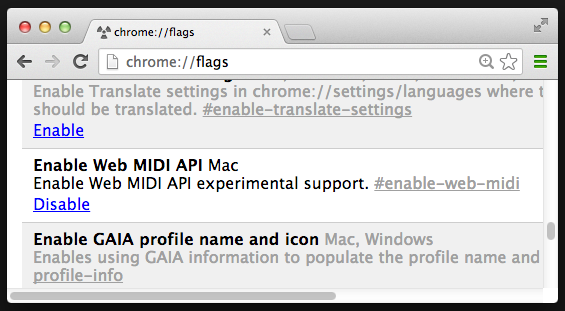

JavaScript Library for Web MIDI API
JavaScript Library for Web MIDI API
Ktrl is a JavaScript library that provides an abstract layer for all available MIDI input sources on the system and a convenient MIDI message routing system. It is built on top of Web MIDI API, which is currently available on the Chrome Canary build. (Version 30.0.1553.2 and beyond)
Mac (at the moment. sorry.)
Chrome Canary build with Web MIDI API flag enabled

<script src="https://github.com/hoch/ktrl/raw/master/ktrl.js"></script>
// create MIDI target (i.e. a synth)
var t = Ktrl.createTarget("mySynth");
// define MIDI data handler
t.onData(function (midimessage) {
var data = Ktrl.parse(midimessage);
console.log(t.label, data);
});
// prepare MIDI API and route up
Ktrl.ready(function () {
// route all MIDI inputs to the target
Ktrl.routeAllToTarget(t);
// active target
t.activate();
});
reports available MIDI sources and targets.
> Ktrl.report()
[ktrl] listing available MIDI sources...
source 0 MIDI IN KORG INC.
source 1 PORT A KORG INC.
source 2 PORT B KORG INC.
source 3 Nocturn Keyboard Novation
[ktrl] listing available MIDI targets...
target 0 mySynth true
target 1 myDrums false
creates a MIDI target with label.
var t = Ktrl.createTarget("mySynth");
t.onData(function (midimessage) {
// here goes user-defined MIDI action
});
routes all available sources to a specified target. (all to one mapping) Note that this method can only be completed after Ktrl is ready. Use inside Ktrl.ready() method.
Ktrl.ready(function () {
// myTarget is defined beforehand...
Ktrl.routeAllToTarget(myTarget);
});
routes a specified source to a target. (one to one mapping) Note that this method can only be completed after Ktrl is ready. Use inside Ktrl.ready() method. The source ID can be retrieved by pinging Ktrl.report().
Ktrl.ready(function () {
// myTarget is defined beforehand...
Ktrl.routeSourceToTarget(1, myTarget);
});
disconnects a target from all sources keeping it available in Ktrl system.
// myTarget is defined somewhere...
Ktrl.disconnectTarget(myTarget);
removes a target from Ktrl system. also disconnects it from all the source beforehand.
// myTarget is defined somewhere...
Ktrl.removeTarget(myTarget);
sets user-defined actions to be executed when Ktrl is ready.
Ktrl.ready(function () {
// do stuff here when Ktrl is done with probing MIDI assests
Ktrl.report();
Ktrl.routeAllToTarget(myTarget);
});
parses MIDI message into JavaScript-friendly form. A returned object varies according to the MIDI data type.
["noteoff", "noteon"]: { type, channel, pitch, velocity }
["polypressure"]: { type, channel, pitch, pressure }
["controlchange"]: { type, channel, control, value }
["programchange"]: { type, channel, program }
["channelpressure"]: { type, channel, pressure }
["pitchwheel"]: { type, channel, wheel }
Usually it should be used in conjunction with target.onData() method to specify the action for various MIDI data.
// the target
var bullseye = Ktrl.createTarget("mySynth");
// define onData handler
bullseye.onData(function (midimessage) {
var data = Ktrl.parse(midimessage);
if (data.type === "noteon") {
mySynth.noteOn(data.pitch, data.velocity);
}
});
Will be posted shortly.
Please find the license in the source code.